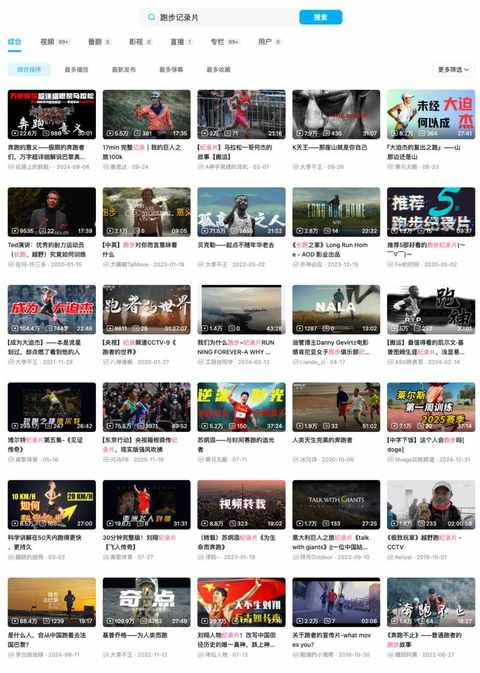
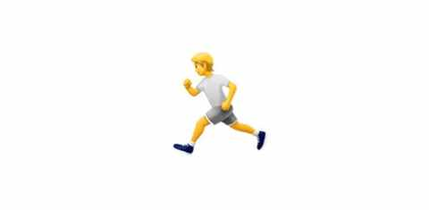

写给中年人的，低成本跑步入门（入坑）指南
一、前言
由于不断的跑步，每次跑步之后也会分享动态在朋友圈，逐渐也影响到一些朋友想尝试跑步这项运动。

入门，往往是一个不大不小的难题。
网络上关于跑步的内容对跑步小透明的友好程度十分有限，而往往身边跑步的伙伴也很少能带动着一起跑的，面对的未知和不确定性比想象中更多。
例如，我开始跑步的时候就是一个人跑，现在大部分时候也都是一个人跑，不少关于跑步的常识在跑了几个月之后才知道。
- 27 个月，2500km 实测，跑步新手踩坑指北
不过，在路上跑步的时候遇到组团跑的也极少，除了在场地里面可能大家还是更喜欢一个人跑步，可能大部分人都是在没有跑步搭子的情况下坚持跑步的。
二、低成本入门指南
1️⃣ 关于跑步的常识
① 适度跑步不伤膝盖
普通人很难达到对膝盖达到损伤的运动量，适度跑步反而能强化膝盖周围的肌肉，让你的膝盖变得更强。
② 有不舒服及时休整
如休息无法缓解疲劳或酸痛，一定及时就医，做相关检查之后听医生的建议。
③ 不是每个人都适合跑步
个体差异是永远且一直会存在的，不是每个人都适合跑步。
有的是客观条件限制，有的是单纯的不喜欢，这都是极其正常的事情，除了跑步还有很多其他有意思的运动。
④ 注重身体感受
注意心跳和呼吸的协调，不宜 长时间 过高心率运动。
如果稍跑快点就伴随着心跳的 明显加速 ，一定先降速让心率趋于平缓。
跑前要热身，跑后需拉伸。
2️⃣ 低成本入门的 tips
① 先不买任何跑步装备
在坚持每周能跑 1-2 次，一个月能跑 30km 之前，先不购买任何跑步装备，以防浪费的可能。
利用好自己的已有装备：运动鞋、厚一点的袜子、轻薄点的T恤……
② 去场地跑或与搭子一起跑
刚开始跑步，有同行的伙伴能更容易坚持和上手。
场地里面会有超多运动的人，氛围感满满，而且各种速度和着装的都有：散步的、快走的、慢跑的、冲刺跑的……
你用任何速度和穿衣搭配，在参与其中的时候都不显得突兀。
和他人一起跑的好处就更不必说了，两个人或更多人一起跑能坚持的更久，跑的时候也动力十足。
③ 看关于跑步的书或纪录片
相比纪录片，跑步相关书籍会更多一点，各种类型的都有。
纪录片是能更快从跑步中汲取力量的方式，看书能让你不断加强对跑步的认识。

④ 请一定循序渐进
强烈建议刚开始跑步，先从单次 3km 开始，前期至少做到跑一休一。
如果运动基础一般，跑1km累了走路1km再继续跑1km都是可以的，因为身体的适应需要一个过程，你得给身体多一点时间去跟上你的意识。
待跑了几次 3km 之后感觉良好再尝试 5km，跑一段时间5km之后再尝试 8km。
……
三、结语
有很多人说，跑步是人类的本能，跑步是中年人的解药……
我作为一个中年人，现在跑步两年半才感觉刚刚入门，我最想说的是：
跑步是一个运动项目，这个运动不一定适合每个人但绝对值得去试试看！
可能在某天某地的某时某刻，某个中年人也开始独自奔跑。
